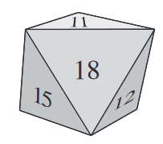

Suppose that the 8 identical faces of a regular octahedron, like the one shown below, are numbered from 11 through 18, with 1 number per face, and each face is equally likely to land down when the octahedron is tossed. What is the probability that, on 1 toss of this octahedron, the number on the face landing down is a prime number or an even number?
